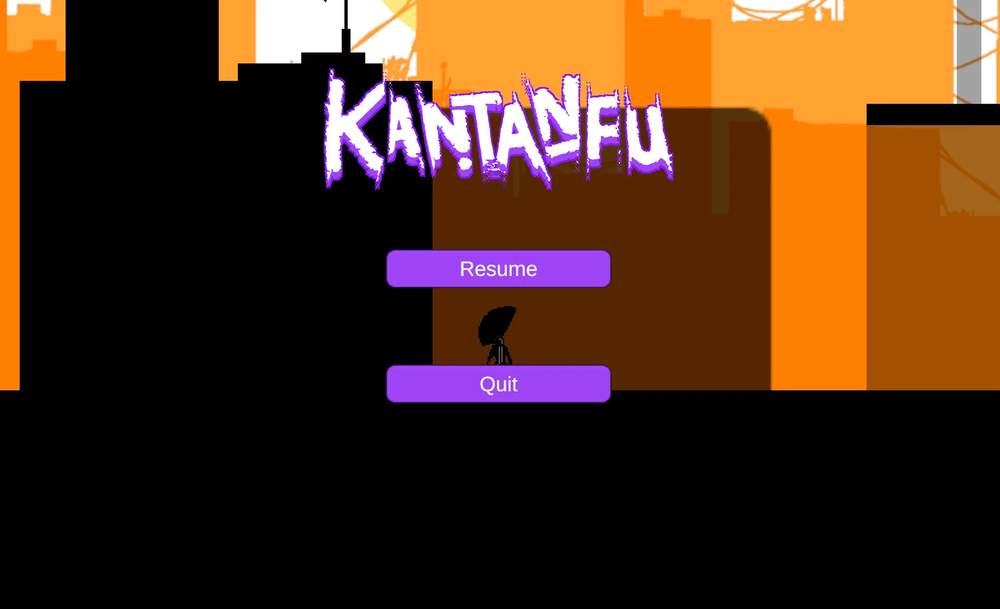
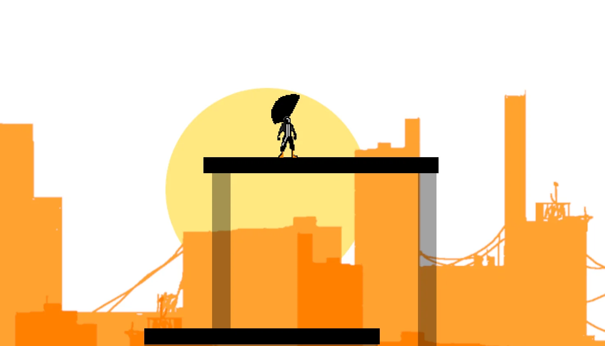
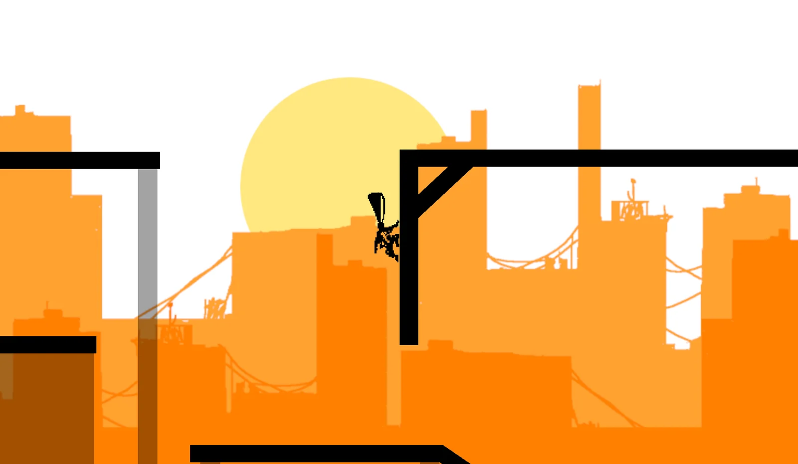
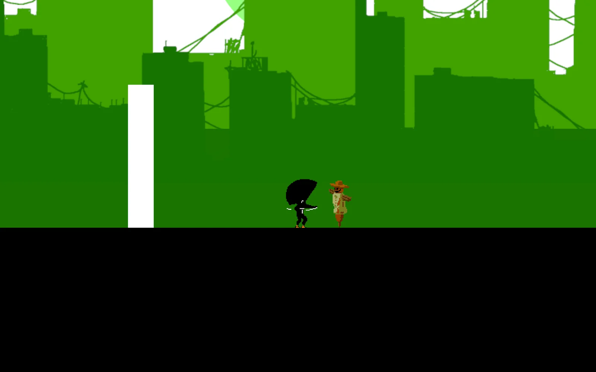
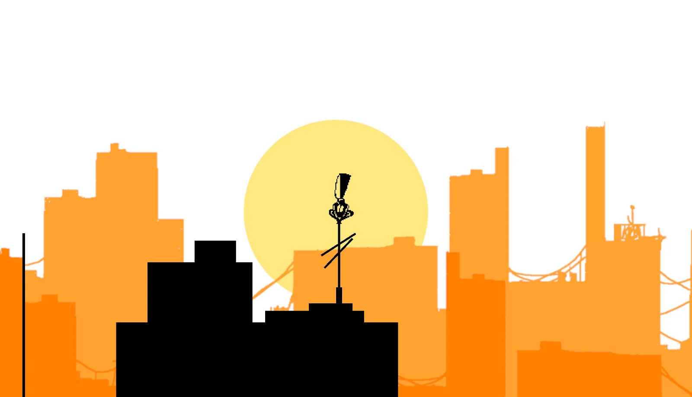

özet
Kantanfu, Dotto•Man evreninden doğan bir 2D oyun prototipi ve merkezinde Rex var. Platform, parkur, yakın dövüş, motosiklet sahneleri ve karakterler arası diyaloglarla deneysel bir yapı kuruyorum.
Bu proje benim için sadece bir oyun fikri değil; 2D karakter kontrolünü, animasyonu, çarpışmaları, oyun hissini ve seviye tasarımını adım adım öğrendiğim bir alan. Kısacası Rex koşarken ben de Unity'nin içinde düşüp kalkıyorum. Neyse ki ikimiz de respawn olabiliyoruz.
oyun fikri
Çizgi roman estetiğini, absürt karakterleri, aksiyon sahnelerini ve platform oynanışını bir arada istiyorum. Rex'in hareket kabiliyetiyle bölümler arasında ilerliyorsun: engelleri aşıyorsun, düşmanlarla kapışıyorsun, çevreyle etkileşime giriyorsun ve hikâyenin parçası olan karakterlerle laflıyorsun.
evren ve karakter
Kantanfu, noktalama işaretlerinin kişileştiği Dotto•Man evrenine bağlı. Rex, yani Ünlem, o evrenin en hareketli ve en gürültülü üyesi. Büyük saçları, asi tavrı ve muhtemelen gerekenden fazla özgüveniyle hem oynanışın hem de görsel kimliğin merkezinde duruyor.
oynanış
Prototipte asıl derdim Rex'in hareketinin elde iyi hissettirmesi. Yürüme, koşma, zıplama, kenara tutunma, tırmanma, saldırı, çevreyle etkileşim ve motosiklet gibi parçalar üzerinde çalışıyorum. Hedef basit: tuşa bastığın an Rex'in ne yapacağını bilmen ve yaptığında hoşuna gitmesi.
saç mekaniği fikri
Rex'in koca saçını sadece süs olarak değil, oynanışın bir parçası olarak kullanmak istiyorum. Hasar aldıkça saçı dağılıyor, parçalanıyor ya da küçülüyor; klasik can barı yerine görsel bir sağlık göstergesi. Yani Rex'in saçı kötü görünüyorsa durum gerçekten kötü demektir.
geliştirme süreci
Hazır paketleri takıp geçmek yerine mekaniklerin nasıl çalıştığını öğrenerek ilerliyorum. Karakter kontrolü, fizik tabanlı hareket, kenara tutunma, animasyon geçişleri ve seviye akışını tek tek ele alıp prototipi parça parça büyütüyorum. Yavaş ama sağlam; festina lente.
rolüm
Fikir, karakter tasarımı, Unity tarafı, C# scriptleri, hareket sistemleri, animasyon mantığı, seviye düzeni ve prototipleme üzerinde çalışıyorum. Bir yandan da Dotto•Man karakterlerinin oynanışa nasıl taşınabileceğini deneyerek oyunun kimliğini buluyorum.
öne çıkan sistemler
- 2D karakter hareketi ve zıplama sistemi
- Kenara tutunma ve tırmanma mekaniği
- Parkur ve platform bölümleri
- Yakın dövüş ve aksiyon denemeleri
- Motosiklet sekansları için prototip fikirleri
- Diyalog ve karakter etkileşimi planları
- Görsel sağlık göstergesi olarak saç mekaniği fikri
ekran görüntüleri
Prototip hâli, ama havası belli: renkli bir şehir siluetinin önünde simsiyah bir Rex ve onun kendi başına karakter sayılabilecek saçı. Görsellere tıklayınca büyüyor.










teknolojiler
- Unity
- C#
- Unity 2D
- 2D Physics
- Sprite Animation
- URP 2D
- Level Design
- Gameplay Prototyping
not
Kantanfu şu an rafta bekleyen bir prototip. Yarım kaldı ama ölmedi; doğru motivasyonu ya da bir bütçeyi bulduğunda kaldığı yerden devam edecek. O zamana kadar bazı mekanikler test halinde, bazı hareketler fazla iddialı, bazı düşüşler de tamamen eğitim amaçlı.